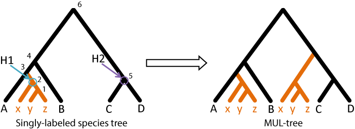

README
This section describes the program and its usage. For background about the algorithm see the About section.
GRAMPA: Gene-tree Reconciliation Algorithm with MUL-trees for Polyploid Analysis
Installation
Clone or download the github repo: GRAMPA github
The only dependency is Python 2.7 or higher. You may want to add the GRAMPA folder to your $PATH variable for ease of use!
Usage
The first thing you should do when you try to run GRAMPA is make sure everything is working with some test files. You can do this easily
by running the --tests command:
python grampa.py --testsIf all tests pass, then you're good to go! Basic usage in a real case would be:
python grampa.py -s [species tree file] -g [gene trees file] -o [output directory]This would perform a full search for the optimal (lowest scoring) MUL-tree on the input species tree.
Input
There are two main inputs for the program:
- A file or string containing a Newick formatted rooted species tree (
-s). This can be a singly labeled tree or a MUL-tree. - A file containing one or more Newick formatted rooted gene trees (one tree per line) (
-g).
Important: the tip labels of the gene tree MUST be formatted such that they end with _[species label], where [species label] corresponds to a tip label in the species tree.
Output
All output files will be placed in the directory specified with -o
GRAMPA creates three main output files and a filtered tree file (if necessary).
GRAMPA also creates a directory within the output directory called groups_dir. This just stores the gene tree groupings for each MUL-tree (in pickled format) so GRAMPA doesn't eat up a lot of RAM during reconciliations. This can be ignored/deleted
grampa_out.txt
This is the main output file and contains some log info for the current run and it gives the total reconciliation score for each MUL-tree considered. At the bottom of the file it will display the MUL-tree with the minimum reconciliation score.
# Tree # H1 node H2 node Tree string Total score ST (((a,(x,(y,z)<1>)<2>)<3>,b)<4>,(c,d)<5>)<6> 115 MT-1 <2> a ((((a,(x*,(y*,z*)<1>)<2>)<3>,(x+,(y+,z+)<4>)<5>)<6>,b)<7>,(c,d)<8>)<9> 119 MT-2 <2> c (((a,(x+,(y+,z+)<1>)<2>)<3>,b)<4>,((c,(x*,(y*,z*)<5>)<6>)<7>,d)<8>)<9> 96 MT-3 <2> b (((a,(x+,(y+,z+)<1>)<2>)<3>,(b,(x*,(y*,z*)<4>)<5>)<6>)<7>,(c,d)<8>)<9> 130 MT-4 <2> d (((a,(x+,(y+,z+)<1>)<2>)<3>,b)<4>,(c,(d,(x*,(y*,z*)<5>)<6>)<7>)<8>)<9> 76 MT-5 <2> <3> ((((a,(x+,(y+,z+)<1>)<2>)<3>,(x*,(y*,z*)<4>)<5>)<6>,b)<7>,(c,d)<8>)<9> 119 MT-6 <2> <2> (((a,((x+,(y+,z+)<1>)<2>,(x*,(y*,z*)<3>)<4>)<5>)<6>,b)<7>,(c,d)<8>)<9> 145 MT-7 <2> <6> ((((a,(x+,(y+,z+)<1>)<2>)<3>,b)<4>,(c,d)<5>)<6>,(x*,(y*,z*)<7>)<8>)<9> 132 MT-8 <2> <4> ((((a,(x+,(y+,z+)<1>)<2>)<3>,b)<4>,(x*,(y*,z*)<5>)<6>)<7>,(c,d)<8>)<9> 118 MT-9 <2> <5> (((a,(x+,(y+,z+)<1>)<2>)<3>,b)<4>,((c,d)<5>,(x*,(y*,z*)<6>)<7>)<8>)<9> 95 # --------- The MUL-tree with the minimum parsimony score is MT-4: (((a,(x+,(y+,z+)<1>)<2>)<3>,b)<4>,(c,(d,(x*,(y*,z*)<5>)<6>)<7>)<8>)<9> Score = 76- The first line has the headers for the columns of the output table. Note that H1 node and H2 node are always nodes in the singly labeled tree.
- The total reconciliation score in the last column is the sum of all reconciliation scores for all gene trees for that MUL-tree.
grampa_det.txt
The secondary output file contains detailed output describing the reconciliation scores from each gene tree to the lowest scoring MUL-tree.
# MT-4:(((a,(x+,(y+,z+)<1>)<2>)<3>,b)<4>,(c,(d,(x*,(y*,z*)<5>)<6>)<7>)<8>)<9> H1 Node:<2> H2 Node:d # GT/MT combo # dups # losses Total score GT-1 to MT-4 1 1 2 GT-2 to MT-4 1 2 3 GT-3 to MT-4 1 3 4 GT-4 to MT-4 1 2 3 . . . GT-25 to MT-4 0 1 1 # Gene trees with multiple maps: 1 # Total parsimony score for MT-4: 76- The first line contains info about the MUL-tree and the second line contains the headers for the rest of the table
- Note that the lowest score for some GT/MT combos can have multiple maps. In these cases, we report all possible scores
grampa_checknums.txt
GRAMPA must calculate how many combinations of maps there are for each gene-tree/MUL-tree pair and filter out those that are over the group cap in any combo before any reconciliations can be done. This filtering ensures that all MUL-trees are reconciled to the same set of gene-trees. The number of groups for each gene-tree/MUL-tree is recorded in this file.
# GT/MT combo # Groups # Fixed # Combinations # MT-1:((((a,(x*,(y*,z*)<1>)<2>)<3>,(x+,(y+,z+)<4>)<5>)<6>,b)<7>,(c,d)<8>)<9> H1 Node:<2> H2 Node:a GT-1 to MT-1 2 0 4 GT-2 to MT-1 1 1 2 GT-3 to MT-1 1 1 2 GT-4 to MT-1 1 1 2 . . . GT-25 to MT-9 0 2 1- The first line in the file contains the table headers. For each MUL-tree there is also a line giving som info about it.
- If a gene tree is over the cap specified with
-c Xthen the messageNumber of groups over group cap (-c set to X) -- Filtering.will also be displayed on the line.
Options Table
| Option | Description |
|---|---|
| -s | A file or string containing a bifurcating, rooted species tree in Newick format. This tree can either be singly-labeled or MUL. |
| -g | A file containing one or more rooted, Newick formatted gene trees. |
| -h1 | A space separated list of nodes to search as the polyploid clade. If nothing is entered all nodes will be considered. |
| -h2 | A space separated list of nodes to search as possible parental lineages for all nodes specified with -h1.
If nothing is entered all possible nodes for the current h1 will be considered. |
| -d | An option to specify whether to do reconciliations to MUL-trees only (0), the singly-labeled tree only (1), or both (2). Default: 2 |
| -c | The maximum number of initial groups to consider for any gene tree. Default: 8, Max value: 18 |
| -o | Output directory name. If the directory is not present, GRAMPA will created it for you. |
| -f | By default, all output files created by GRAMPA will have the prefix 'grampa_'. You can specify a different prefix with this option. |
| -v | Control the amount of output printed to the screen. Print all output (1) or just some log info (0). Default: 1 |
| -p | The number of processes GRAMPA should use for reconciliations. |
| --multree | Set this flag if your input species tree is a MUL-tree. |
| --labeltree | The program will simply label your input species tree. |
| --buildmultrees | Build MUL-trees given -s, -h1, and -h2. |
| --checknums | If this flag is entered, the program will just calculate the number of groups per gene tree and exit. No reconciliations will be done. |
| --maps | Output the node maps for each reconciliation in addition to the scores. The maps will be placed in the detailed output file. |
| --tests | Run the tests script |
Detailed options
-s : A rooted, Newick formatted species tree. This tree can be singly-labeled or MUL.
The tree can be in a file, in which case you enter the file name here, or you can simply paste the tree string into the command line.
Entering a singly-labeled tree means you wish to search for the most parsimonious polyploidy scenario. GRAMPA will build MUL-trees based
on this singly-labeled tree and calculate reconciliation scores. You can specify the range of MUL-trees to build with the
-h1 and -h2 options.
Example singly-labeled species tree:
(((a,(x,(y,z))),b),(c,d))Entering a MUL-tree is the equivalent of entering a singly-labeled tree and specifying a single H1 and single H2 node. It represents a single scenario of polyploidy and can be used if you wish to count the number of duplications and losses on gene trees given that scenario.
NOTE: If a MUL-tree is entered, the --multree flag must be set.
Example MUL-tree:
((((a,(x,(y,z))),b),(x,(y,z))),(c,d))-g : A file containing newick formatted gene trees.
This file should contain one or more Newick formatted gene trees, with one tree per line in the file.
The tip labels in the gene trees must end with _[species label] where [species label] matches a tip label in the species tree This is necessary so GRAMPA can initialize the mappings correctly.
Alternatively, if you wish to reconcile to only a single gene tree, you can simply paste the tree string into the command line.
-h1 and -h2 : GRAMPA's search parameters.
H1 and H2 are nodes in the singly-labeled species tree that define how to build a MUL-tree. H1 is the node that represents the polyploid clade. The subtree rooted at H1 and the branch that H1 subtends will be copied onto the branch that H2 subtends:
In the above example, H1 is node 2 and H2 is node 5 in the singly-labeled tree. This leads to the MUL-tree on the right.
H1 and H2 can be input in 2 different, equivalent ways:
-h1 "2" -h2 "5" and -h1 "x,y,z" -h2 "c,d"The first way relies on internal node labels. To label your species tree, use the --labeltree option.
IMPORTANT: For now, only use node labels as specified by --labeltree. Custom labels will not work.
The second way uses a list of the species that define that node. Species must be comma delimited.
H2 cannot be located below H1 in the species tree! If this occurs, GRAMPA will just tell you that it's not possible and move on.
Multiple H1 and H2 nodes can be entered as a space delimited list:
-h1 "2 3" -h2 "5 6" and -h1 "x,y,z a,x,y,z" -h2 "c,d a,b,c,d,x,y,z" are equivalent.Entering this means that GRAMPA will first set H1 as node 2 and try both nodes 5 and 6 as H2. Then H1 will be set to node 3 and will try nodes 5 and 6 as H2.
If -h1 and -h2 are not specified, GRAMPA will try all possible node combinations
of H1 and H2!
-d : Reconciliation type option
GRAMPA can do reconciliations to singly-labeled and MUL-trees. If you know a polyploidy event has taken place, you may wish to only reconcile to MUL-trees. However, if you are trying to identify a new polyploidy event, the scores of all MUL-trees considered must be compared to the score of the singly-labeled tree, which represents a scenario of no polyploidy.
| Input | Setting |
|---|---|
-d 0 | Reconcile to MUL-trees only |
-d 1 | Reconcile to the singly-labeled tree only |
-d 2 | Reconcile to both the singly-labeled tree and MUL-trees |
Setting -d 1 also means you can use GRAMPA to count duplications and losses in the absence of polyploidy,
like any other reconciliation program!
-c : The group cap
GRAMPA uses the standard LCA reconciliation algorithm on MUL-trees, meaning that some genes have more than one possible mapping. We get around this by trying ALL possible initial mappings and picking the one with the lowest score. This works, but also means our program has an exponential runtime based on the number of genes from polyploid species in any given gene tree. We get around this in several ways by collapsing and fixing groups (see paper), but there can still be lots of groups. This parameter sets the maximum number of groups to consider for any gene tree. If a gene tree has more than this number of groups, it will be skipped.
Default is 8 groups, with a max setting of 18.
-o : Output directory
Grampa creates several output files, so it is easiest just to place them all in a single directory. That directory can be specified with this option, and will be created for you if it doesn't exist. If this option is not specified, the default output directory is "grampa_[date]-[time]".
-f : Output file prefix
By default, all output files created by GRAMPA will have the prefix 'grampa_'. You can specify a different prefix with this option.
For example, a run with -p test will generate the following output files, all within the output directory:
test_out.txt, test_det.txt, test_checknums.txt--multree : Input MUL-tree flag
GRAMPA can accept both singly-labeled and MUL-trees as input. If your input species tree (-s) is a MUL-tree,
you must set this flag so GRAMPA knows to read it as a MUL-tree. A MUL-tree represents a single possible polyploid scenario and it is
equivalent to entering a singly-labeled tree with a single H1 and H2 node specified.
--labeltree : Species tree labeling
This option can be used in conjunction with -s to simply add internal node labels to a species tree and print
it to the screen. For example, if the file species.tree contains the following tree:
(((a,(x,(y,z))),b),(c,d))Then the command:
python grampa.py -s species.tree --labeltreeWill simply print this to the screen as output:
(((a,(x,(y,z)<1>)<2>)<3>,b)<4>,(c,d)<5>)<6>--buildmultrees : Building MUL-trees
This option can be used with -s, -h1, and -h2 to build
MUL-trees from a standard species tree. For example, if the file species.tree contains the following tree:
(((a,(x,(y,z))),b),(c,d))Then the command:
python grampa.py -s species.tree -h1 "2" -h2 "4" -o multree_ex --buildmultreesWill yield the following output in the main output file (multree_ex/grampa_out.txt):
((((a,(x+,(y+,z+)<1>)<2>)<3>,b)<4>,(x*,(y*,z*)<5>)<6>)<7>,(c,d)<8>)<9>--checknums : Group counting
With this set, the program will run normally with the specified options, except no reconciliations will be done. Instead, only the
checknums output file will be created and will contain the number of polyploid groups for each gene tree. Use this to decide the
best setting for -c.
--maps : Output node mappings
Set this option to output the LCA node mappings along with the reconciliation scores to the detailed output file. This adds a column to the _det.txt output file with that gene tree with the nodes re-labeled to include the maps, dups, and losses along that branch.
# GT/MT combo # dups # losses Total score Maps
GT-1 to MT-4 1 1 2 (((1_a[a+-0],((1_x[x+-0],(1_y[y+-0],1_z[z+-0])<1>[<1>+-0])<2>[<2>+-0],(2_x[x+-0],(2_y[y+-0],2_z[z+-0])<3>[<1>+-0])<4>[<2>+-0])<5>[<2>+-1])<6>[<3>+-0],1_b[b+-0])<7>[<4>+-0],(1_c[c+-0],1_d[d+-0])<8>[<8>+-0])<9>[<9>+-0]
GT-2 to MT-4 1 2 3 ((((1_a[a+-0],(1_x[x+-0],(1_y[y+-0],1_z[z+-0])<1>[<1>+-0])<2>[<2>+-0])<3>[<3>+-0],(2_x[x+-0],(2_y[y+-0],2_z[z+-0])<4>[<1>+-0])<5>[<2>+-0])<6>[<3>+-1],1_b[b+-0])<7>[<4>+-0],(1_c[c+-0],1_d[d+-0])<8>[<8>+-0])<9>[<9>+-0]
GT-3 to MT-4 1 3 4 ((((1_a[a+-0],(1_x[x+-0],(1_y[y+-0],1_z[z+-0])<1>[<1>+-0])<2>[<2>+-0])<3>[<3>+-0],1_b[b+-0])<4>[<4>+-0],(2_x[x+-0],(2_y[y+-0],2_z[z+-0])<5>[<1>+-0])<6>[<2>+-0])<7>[<4>+-1],(1_c[c+-0],1_d[d+-0])<8>[<8>+-0])<9>[<9>+-0]
GT-4 to MT-4 1 2 3 ((((1_a[a+-0],(2_x[x+-0],(2_y[y+-0],2_z[z+-0])<1>[<1>+-0])<2>[<2>+-0])<3>[<3>+-0],(1_x[x+-0],(1_y[y+-0],1_z[z+-0])<4>[<1>+-0])<5>[<2>+-0])<6>[<3>+-1],1_b[b+-0])<7>[<4>+-0],(1_c[c+-0],1_d[d+-0])<8>[<8>+-0])<9>[<9>+-0]
.
.
.
GT-25 to MT-4 0 1 1 (((1_a[a+-0],1_x[x+-0])<1>[<3>+-0],1_b[b+-0])<2>[<4>+-0],(1_c[c+-0],(1_d[d+-0],(2_x[x*-0],(1_y[y*-0],1_z[z*-0])<3>[<5>+-0])<4>[<6>+-0])<5>[<7>+-0])<6>[<8>+-0])<7>[<9>+-0]
# Gene trees with multiple maps: 1
# Total parsimony score for MT-4: 76
The last column is the gene tree with the nodes relabeled as:
Node[Map-Dups]where Dups is 1 if the node is a duplication node and 0 if not.
These trees can be rendered with a tree viewer such as SeaView or FigTree.